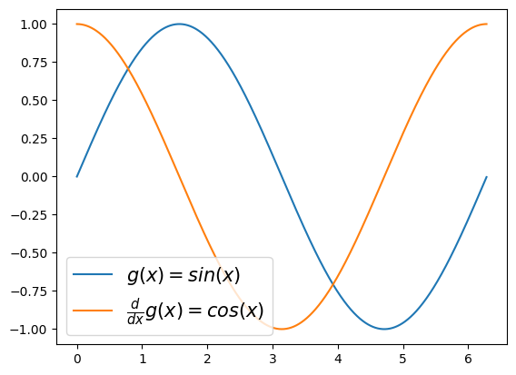
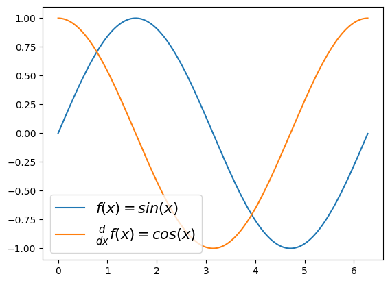

Lesson 10: lambda, map, apply, applymap

강의영상
imports
lambda
- 예제1: 람다표현식(lambda expression)자체가 하나의 오브젝트임
<function __main__.<lambda>(x)>(사용방법)
quiz
\(f(x)=\sqrt{x}\) 를 수행하는 함수를 lambda를 이용하여 구성하라.
- 예제2: 람다표현식에 이름을 줄 수 있음.
위의 코드는 아래와 같다.
- 예제3: 조건부 출력
quiz
임의의 알파벳 문자열을 입력으로 하고, 알파벳이 대문자이면 “대문자 입니다”를 리턴하고 소문자이면 “소문자 입니다”를 리턴하는 함수를 구성하라.
(힌트) 아래코드 이용
- 예제4: 람다표현식들의 리스트

- 예제5: 람다표현식들의 딕셔너리
{'f1': <function __main__.<lambda>(x)>,
'f2': <function __main__.<lambda>(x)>,
'f3': <function __main__.<lambda>(x)>}- 예제6: 람다표현식을 리턴하는 함수 (함수를 리턴하는 함수)
(예비학습) 함수 \(g(x)\)가 정의되어 있을때 \(\frac{d}{dx}g(x)\)의 값을 계산해보기
\(g(x)=x^2\)
\[g'(x)=gg(x)=2x\approx \frac{g(x+0.001)-g(x)}{0.001}\]
(목표) 도함수를 구해주는 derivate 함수를 정의하자. 이 함수는 임의의 함수 g를 입력으로 받으면, g의 도함수(gg)가 리턴되는 기능을 가진다.
(사용1)
plt.plot(x,g(x),label=r'$g(x)=sin(x)$')
plt.plot(x,gg(x),label=r'$\frac{d}{dx}g(x)=cos(x)$')
plt.legend(fontsize=15)
(사용2)
x = np.linspace(-1,1,100)
plt.plot(x,g0(x),'--',label=r'$g_0(x)=\frac{1}{6}x^3$')
plt.plot(x,g1(x),'--',label=r'$g_1(x)=\frac{1}{2}x^2$')
plt.plot(x,g2(x),'--',label=r'$g_2(x)=x$')
plt.legend(fontsize=15)
- 예제7: 예제6의 다른표현
(사용1)
plt.plot(x,g(x),label=r'$f(x)=sin(x)$')
plt.plot(x,gg(x),label=r'$\frac{d}{dx}f(x)=cos(x)$')
plt.legend(fontsize=15)
(사용2)
map
- 개념: $(f,[x_1,x_2,,x_n] )=$
- 예제1:
(다른구현1)
(다른구현2)
quiz
\(x=[1,2,3,4,5]\)에 대하여 \(x^2\)을 수행하는 함수를 구현하라.
- 예제2: 문자열을 입력으로 받고 대문자이면 True, 소문자이면 False
입력: A,B,C,a,b,c
출력: T,T,T,F,F,F- 예제3: 두개의 입력을 받는 함수 (map을 이용하는 것이 리스트 컴프리헨션보다 조금 편한것 같다)
(다른구현)– 리스트컴프리헨션
quiz
\(f(x,y) = \max(x,y)\) 를 구현하여 \({\bf x}\),\({\bf y}\) 각 원소에 적용하고 결과를 시각화 하라.
- 예제4: map은 “하나의 함수에 다양한 입력”을 적용하는 경우에만 사용가능, 리스트컴프리헨션은 “다양한 함수에 다양한 입력” 지원
map으로 구현시도 \(\to\) 실패
리스트컴프리헨션으로 구현시도 \(\to\) 성공
- 종합: map과 리스트컴프리헨션과 비교
- map은 for문을 위한 \(i\)등의 인덱스를 쓰지 않지만 리스트컴프리헨션은 필요함
- map은 좀 더 리스트컴프리헨션보다 제약적으로 사용할 수 밖에 없음.
df.apply(집계함수,axis=?)
예비학습: 함수의 종류
- 집계함수: 벡터입력 -> 스칼라출력
- 변환함수: 벡터입력 -> 벡터출력
| A | B | C | |
|---|---|---|---|
| 0 | 1 | 4 | 7 |
| 1 | 2 | 5 | 8 |
| 2 | 3 | 6 | 9 |
| 3 | 4 | 7 | 10 |
- 예제1: column-wise sum을 구하라.
- 예제2: row-wise sum을 구하라.
- 예제3: 모든 col에서 \(\frac{1}{2}\big(\min({\bf x}) + \max({\bf x})\big)\)를 적용하여 구하라.
- 예제4: 모든 row에서 \(\frac{1}{2}\big(\min({\bf x}) + \max({\bf x})\big)\)를 적용하여 구하라.
s.apply(변환함수)
| A | B | C | |
|---|---|---|---|
| 0 | 1 | 4 | 7 |
| 1 | 2 | 5 | 8 |
| 2 | 3 | 6 | 9 |
| 3 | 4 | 7 | 10 |
- 예제1: df.A 열에서 2보다 크면 True, 그렇지 않으면 False를 리턴하는 변환함수를 적용하라.
- 예제2: df.A 열에서 2보다 크면 ‘H’, 그렇지 않으면 ’L’을 리턴하는 변환함수를 적용하라.
- 예제3: 아래와 같은 pd.Series 를 고려하자.
df = pd.read_csv('https://raw.githubusercontent.com/guebin/DV2022/master/posts/FIFA23_official_data.csv')
s = df.Height
s0 189cm
1 179cm
2 172cm
3 181cm
4 172cm
...
17655 190cm
17656 195cm
17657 190cm
17658 187cm
17659 186cm
Name: Height, Length: 17660, dtype: object각각 원소를 int형으로 바꾸는 변환함수를 적용하라.
0 189
1 179
2 172
3 181
4 172
...
17655 190
17656 195
17657 190
17658 187
17659 186
Name: Height, Length: 17660, dtype: int64df.applymap(변환함수)
- 예제1: 아래의 데이터 프레임을 고려하자.
| A | B | C | |
|---|---|---|---|
| 0 | 1 | 4 | 7 |
| 1 | 2 | 5 | 8 |
| 2 | 3 | 6 | 9 |
| 3 | 4 | 7 | 10 |
| A | B | C | |
|---|---|---|---|
| 0 | 2.000000 | 3.000000 | 3.645751 |
| 1 | 2.414214 | 3.236068 | 3.828427 |
| 2 | 2.732051 | 3.449490 | 4.000000 |
| 3 | 3.000000 | 3.645751 | 4.162278 |
각 원소의 값을 판단하여 5보다 크면 ‘H’, 그렇지 않으면 ’L’를 리턴하는 함수를 구현하라.
- 예제2: 아래의 데이터프레임을 고려하자.
df = pd.read_csv('https://raw.githubusercontent.com/guebin/DV2022/master/posts/FIFA23_official_data.csv')
df.head(n=3)| ID | Name | Age | Photo | Nationality | Flag | Overall | Potential | Club | Club Logo | ... | Real Face | Position | Joined | Loaned From | Contract Valid Until | Height | Weight | Release Clause | Kit Number | Best Overall Rating | |
|---|---|---|---|---|---|---|---|---|---|---|---|---|---|---|---|---|---|---|---|---|---|
| 0 | 209658 | L. Goretzka | 27 | https://cdn.sofifa.net/players/209/658/23_60.png | Germany | https://cdn.sofifa.net/flags/de.png | 87 | 88 | FC Bayern München | https://cdn.sofifa.net/teams/21/30.png | ... | Yes | <span class="pos pos28">SUB | Jul 1, 2018 | NaN | 2026 | 189cm | 82kg | €157M | 8.0 | NaN |
| 1 | 212198 | Bruno Fernandes | 27 | https://cdn.sofifa.net/players/212/198/23_60.png | Portugal | https://cdn.sofifa.net/flags/pt.png | 86 | 87 | Manchester United | https://cdn.sofifa.net/teams/11/30.png | ... | Yes | <span class="pos pos15">LCM | Jan 30, 2020 | NaN | 2026 | 179cm | 69kg | €155M | 8.0 | NaN |
| 2 | 224334 | M. Acuña | 30 | https://cdn.sofifa.net/players/224/334/23_60.png | Argentina | https://cdn.sofifa.net/flags/ar.png | 85 | 85 | Sevilla FC | https://cdn.sofifa.net/teams/481/30.png | ... | No | <span class="pos pos7">LB | Sep 14, 2020 | NaN | 2024 | 172cm | 69kg | €97.7M | 19.0 | NaN |
3 rows × 29 columns
['Height','Weight'] 칼럼을 선택하고 모든 값을 int로 바꾸는 변환을 수행하라.
Quiz
df = pd.read_csv('https://raw.githubusercontent.com/guebin/DV2022/master/posts/FIFA23_official_data.csv')
df.head(n=3)| ID | Name | Age | Photo | Nationality | Flag | Overall | Potential | Club | Club Logo | ... | Real Face | Position | Joined | Loaned From | Contract Valid Until | Height | Weight | Release Clause | Kit Number | Best Overall Rating | |
|---|---|---|---|---|---|---|---|---|---|---|---|---|---|---|---|---|---|---|---|---|---|
| 0 | 209658 | L. Goretzka | 27 | https://cdn.sofifa.net/players/209/658/23_60.png | Germany | https://cdn.sofifa.net/flags/de.png | 87 | 88 | FC Bayern München | https://cdn.sofifa.net/teams/21/30.png | ... | Yes | <span class="pos pos28">SUB | Jul 1, 2018 | NaN | 2026 | 189cm | 82kg | €157M | 8.0 | NaN |
| 1 | 212198 | Bruno Fernandes | 27 | https://cdn.sofifa.net/players/212/198/23_60.png | Portugal | https://cdn.sofifa.net/flags/pt.png | 86 | 87 | Manchester United | https://cdn.sofifa.net/teams/11/30.png | ... | Yes | <span class="pos pos15">LCM | Jan 30, 2020 | NaN | 2026 | 179cm | 69kg | €155M | 8.0 | NaN |
| 2 | 224334 | M. Acuña | 30 | https://cdn.sofifa.net/players/224/334/23_60.png | Argentina | https://cdn.sofifa.net/flags/ar.png | 85 | 85 | Sevilla FC | https://cdn.sofifa.net/teams/481/30.png | ... | No | <span class="pos pos7">LB | Sep 14, 2020 | NaN | 2024 | 172cm | 69kg | €97.7M | 19.0 | NaN |
3 rows × 29 columns
1. Position Column을 출력하고 결과를 s로 저장하라.
2. Position Column의 결측치를 제거하라.
3. 아래의 dict를 이용하여 포지션을 좀 더 알기쉽게 정리하는 변환을 수행하라.
[('GOALKEEPER', ['GK']),
('DEFENDER', ['CB', 'RCB', 'LCB', 'RB', 'LB', 'RWB', 'LWB']),
('MIDFIELDER',
['CM', 'RCM', 'LCM', 'CDM', 'RDM', 'LDM', 'CAM', 'RAM', 'LAM', 'RM', 'LM']),
('FORWARD', ['ST', 'CF', 'RF', 'LF', 'RW', 'LW', 'RS', 'LS']),
('SUB', ['SUB']),
('RES', ['RES'])]예를들면 아래와 같이 변환이 수행되어야 한다.
변환전: '<span class="pos pos15">LCM'
변환후: 'MIDFIELDER'4. Age Column을 선택하고 선수들의 평균나이보다 높은사람은 ‘OB’, 그렇지 않은 사람은 ‘YB’ 로 치환하는 변환함수를 수행하라.
0 OB
1 OB
2 OB
3 OB
4 OB
..
17655 YB
17656 YB
17657 OB
17658 YB
17659 YB
Name: Age, Length: 17660, dtype: object5. Height와 Weight 칼럼을 이용하여 BMI를 계산하라. (BMI를 계산하는 수식은 검색을 통하여 확인할 것)
| Height | Weight | BMI | |
|---|---|---|---|
| 0 | 189 | 82 | 0.002296 |
| 1 | 179 | 69 | 0.002153 |
| 2 | 172 | 69 | 0.002332 |
| 3 | 181 | 70 | 0.002137 |
| 4 | 172 | 68 | 0.002299 |
| ... | ... | ... | ... |
| 17655 | 190 | 78 | 0.002161 |
| 17656 | 195 | 84 | 0.002209 |
| 17657 | 190 | 82 | 0.002271 |
| 17658 | 187 | 79 | 0.002259 |
| 17659 | 186 | 78 | 0.002255 |
17660 rows × 3 columns
6. 5의 결과로 계산된 BMI의 평균값을 구하고, 평균값보다 높은사람은 ‘H’ 그렇지 않은 사람은 ’L’로 치환하는 변환함수를 수행하라.